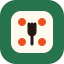

Spin plate
A dinner plate with a roulette pointer. The clearest connection between picking a recipe and spinning the wheel.
Download Spin plate SVG
Recipe Roulette
Recipe Roulette
Four favicon directions for Recipe Roulette, using the site's orange, green, ink, and cream. Compare the artwork at 64, 32, and actual 16-pixel tab size. Roulette wheel is now the live favicon.
A dinner plate with a roulette pointer. The clearest connection between picking a recipe and spinning the wheel.
Download Spin plate SVGA cream die with orange pips and a tiny fork. A playful take on leaving dinner up to chance.
Download Lucky bite SVG
A skillet with a green spin arrow. Cooking comes first, with a little randomness stirred in.
Download Supper spin SVGBold alternating segments with a fixed pointer. The closest match to the app's wheel, simplified for a browser tab.
Download Roulette wheel SVG